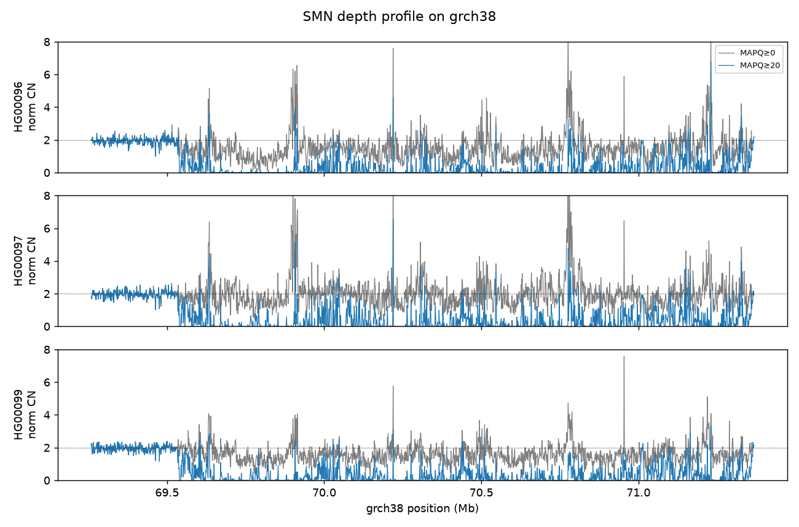
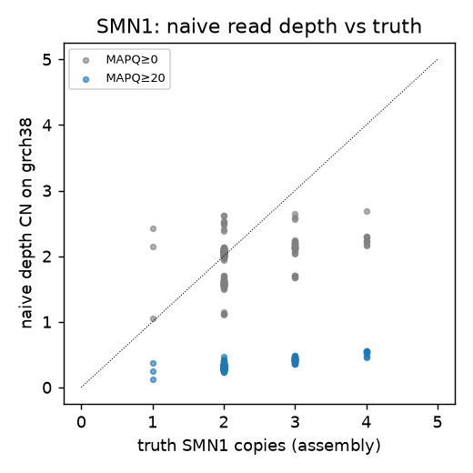
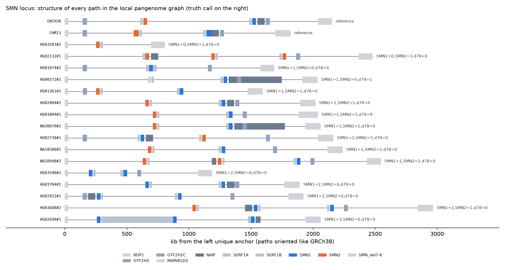
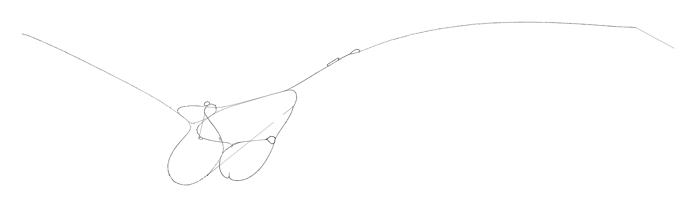

This page documents the project behind the toolbox: which public data we used, how little of it we actually downloaded, how every number was computed, and what went wrong along the way. The interactive results are on the toolbox page.
Copy number is usually measured by read depth: twice the reads, twice the copies. This breaks for genes with near-identical twins (paralogs), because a short read from one twin also matches the other, so the aligner gives it mapping quality 0 and most pipelines discard it. We asked: how well do read-depth and pangenome-aware methods count copies of such genes, on GRCh38 versus the complete T2T-CHM13 reference, when scored against copy numbers read directly from long-read assemblies?
SMN1 = 0 causes spinal muscular atrophy, and 1 copy makes a carrier. The genes are ~28 kb inside a 1–3 Mb inverted duplication whose structure differs between people. The twins differ at ~16 positions.
α-thalassemia. Common deletions (−α3.7, −α4.2) fuse the two genes into one. It's a small, GC-rich region.
A reference error: GRCh38 contains a false second copy of these genes, so real reads are split between the two copies. CHM13 does not have the false copy.
samtools view -L regions.bed -X cram crai). This is also why Locityper was not run (it aligns reads internally).samtools faidx on a bgzipped FASTA with local .fai/.gzi).*.ok markers), all settings in config/config.yaml, every judgement call logged in DECISIONS.md.| Dataset | What it is | How we accessed it | On disk | Used for |
|---|---|---|---|---|
| 1000 Genomes 30x, GRCh38 | NYGC Illumina 2×150 alignments (bwa-mem, alt-aware), 3,202 people | AWS S3 s3://1000genomes/1000G_2504_high_coverage/; region streaming with the CRAI index | 21 GB | Read depth, twin-specific site counts, ctyper input |
| 1000 Genomes on T2T-CHM13v2.0 | The same reads realigned to CHM13 (AnVIL workspace AnVIL_T2T_CHRY) | Found through the AnVIL Azul API (objects have hashed names); region streaming with explicit CRAI | 11 GB | The same measurements on the complete reference |
| Reference genomes | GRCh38 full analysis set + decoys/HLA; CHM13v2.0; GRCh38→CHM13 chain | Whole files (the only ones), checked against CRAM MD5 tags | 7.1 GB | Decoding CRAMs, PSV projection, lifting control windows |
| Gene annotation | GENCODE v49; CHM13 RefSeq/Liftoff; UCSC genomicSuperDups; SMNCopyNumberCaller site list | Direct download | ≈50 MB | Gene/locus coordinates, control windows, the 16 SMN sites |
| HPRC release 2 assemblies | Phased long-read assemblies, 2 haplotypes per person; CAT gene annotation | Remote samtools faidx of only the locus region; per-assembly .fai/.gzi and streamed CAT GFF3 | 325 MB | Truth copy numbers; pangenome graphs |
| DRAGEN reanalyses | Illumina DRAGEN v4.0.3 / v4.2.7 / v4.4.7 outputs for all 3,202 people | Public S3 buckets; only smn.tsv, targeted.json and metrics files, fetched in parallel | 152 MB | Paralog-aware caller on the scoreboard; Bayes prior |
| ctyper | Pangenome allele k-mer matrix + allele annotation (Zenodo 16340156) | Download; cut to 4 gene groups (2.9 MB) | 3.4 GB | Running ctyper on our slices |
| Locityper | Database, 1kGP genotypes and benchmarks (Zenodo 15879519) | Download | 1.7 GB | Showing it has no SMN or HBA locus (only the chr21 CBS demo) |
Every external resource, where it lives and the exact command that fetched it. All access is anonymous (--no-sign-request or plain HTTPS). URLs live in config/config.yaml, and the commands come from the scripts named in each heading. Plain HTTPS downloads go through fetch() in scripts/lib.sh: aria2c -x4 -s4 -c, falling back to curl -fsSL --retry 3 -C -, with an md5 check wherever the source publishes one.
# pedigree + populations (EBI FTP over HTTP)
aria2c -x4 -s4 -c http://ftp.1000genomes.ebi.ac.uk/vol1/ftp/data_collections/1000G_2504_high_coverage/working/1kGP.3202_samples.pedigree_info.txt
aria2c -x4 -s4 -c http://ftp.1000genomes.ebi.ac.uk/vol1/ftp/data_collections/1000G_2504_high_coverage/20130606_g1k_3202_samples_ped_population.txt
# sequence indexes (EBI first; the 698-related index failed there and came from the S3 mirror)
aria2c -x4 -s4 -c http://ftp.1000genomes.ebi.ac.uk/vol1/ftp/data_collections/1000G_2504_high_coverage/1000G_2504_high_coverage.sequence.index
aws s3 cp --no-sign-request s3://1000genomes/1000G_2504_high_coverage/additional_698_related/1000G_698_related_high_coverage.sequence.index .
# list every CRAM/CRAI on S3 (3,202 people)
aws s3 ls --no-sign-request --recursive s3://1000genomes/1000G_2504_high_coverage/data/
aws s3 ls --no-sign-request --recursive s3://1000genomes/1000G_2504_high_coverage/additional_698_related/data/aria2c -x4 -s4 -c https://raw.githubusercontent.com/human-pangenomics/hprc_intermediate_assembly/main/data_tables/assemblies_release2_v1.0.index.csv
aria2c -x4 -s4 -c https://raw.githubusercontent.com/human-pangenomics/hprc_intermediate_assembly/main/data_tables/annotation/cat/cat_genes_hprc_r2_v1.3.index.csv
aria2c -x4 -s4 -c https://raw.githubusercontent.com/human-pangenomics/hprc_intermediate_assembly/main/data_tables/sequencing_data/data_illumina_release2_v1.0.index.csv
aria2c -x4 -s4 -c https://raw.githubusercontent.com/Illumina/SMNCopyNumberCaller/master/data/SMN_region_38.bed
aria2c -x4 -s4 -c https://raw.githubusercontent.com/Illumina/SMNCopyNumberCaller/master/data/SMN_SNP_38.txt# GRCh38 analysis set used by the 1kGP alignments (S3 mirror first, EBI as fallback)
aws s3 cp --no-sign-request s3://1000genomes/technical/reference/GRCh38_reference_genome/GRCh38_full_analysis_set_plus_decoy_hla.fa .
samtools faidx GRCh38_full_analysis_set_plus_decoy_hla.fa
# T2T-CHM13v2.0
aria2c -x4 -s4 -c https://s3-us-west-2.amazonaws.com/human-pangenomics/T2T/CHM13/assemblies/GCA_009914755.4/chm13v2.0.fa.gz
pigz -dc chm13v2.0.fa.gz > chm13v2.0.fa && samtools faidx chm13v2.0.fa
# CHM13 gene annotation + segmental duplications (chosen from a listing of the annotation folder)
aws s3 ls --no-sign-request s3://human-pangenomics/T2T/CHM13/assemblies/annotation/
aws s3 cp --no-sign-request s3://human-pangenomics/T2T/CHM13/assemblies/annotation/chm13v2.0_RefSeq_Liftoff_v5.2.gff3.gz .
aws s3 cp --no-sign-request s3://human-pangenomics/T2T/CHM13/assemblies/annotation/chm13v2.0_SD.bed .
# GRCh38 genes (GENCODE v49 basic), UCSC segmental duplications, GRCh38→CHM13 chain
aria2c -x4 -s4 -c https://ftp.ebi.ac.uk/pub/databases/gencode/Gencode_human/release_49/gencode.v49.basic.annotation.gtf.gz
aria2c -x4 -s4 -c https://hgdownload.soe.ucsc.edu/goldenPath/hg38/database/genomicSuperDups.txt.gz
aria2c -x4 -s4 -c https://s3-us-west-2.amazonaws.com/human-pangenomics/T2T/CHM13/assemblies/chain/v1_nflo/grch38-chm13v2.chain# AnVIL Azul index API (no login): default catalog → dataset "ANVIL_T2T_CHRY" → its CRAM/CRAI files (paged, 250 per page)
GET https://service.explore.anvilproject.org/index/catalogs
GET https://service.explore.anvilproject.org/index/files?catalog=<default>&size=250
&filters={"datasets.title":{"is":["ANVIL_T2T_CHRY"]},"files.file_format":{"is":[".cram",".crai"]}}
# each record's azul_mirror_uri is a public S3 object with a hashed name, e.g. for HG00096:
# CRAM https://anvilproject.s3.amazonaws.com/file/71d42a36eb86dbf3b0bcca7fe02eb864.md5 (12.5 GB, never downloaded)
# CRAI https://anvilproject.s3.amazonaws.com/file/62e0f69e223ab4abf17f92fe5b326826.md5# 1. download only the CRAM index (~1–2 MB)
aws s3 cp --no-sign-request s3://1000genomes/1000G_2504_high_coverage/data/ERR3240115/HG00097.final.cram.crai data/crai/grch38/HG00097.crai
# 2. stream only the reads overlapping our regions from the remote CRAM (the 15.8 GB file is never downloaded)
samtools view -@ 2 -T GRCh38_full_analysis_set_plus_decoy_hla.fa -M -L data/regions/grch38.slice.bed -C \
-o HG00097.grch38.cram \
-X https://1000genomes.s3.amazonaws.com/1000G_2504_high_coverage/data/ERR3240115/HG00097.final.cram data/crai/grch38/HG00097.crai
samtools index HG00097.grch38.cram
# CHM13: identical, with -T chm13v2.0.fa, -L data/regions/chm13.slice.bed and the hashed AnVIL CRAM/CRAI URLs above
# run for 650 people × 2 references, 8 in parallel (xargs -P 8); before slicing, local FASTA MD5s were checked against the CRAM @SQ M5 tags# small index files, downloaded once per haplotype (s3:// rewritten to https://<bucket>.s3.amazonaws.com/)
curl -o HG00097_hap1.fai https://human-pangenomics.s3.amazonaws.com/working/HPRC/HG00097/assemblies/release2/HG00097_hap1_hprc_r2_v1.0.1.fa.gz.fai
curl -o HG00097_hap1.gzi https://human-pangenomics.s3.amazonaws.com/working/HPRC/HG00097/assemblies/release2/HG00097_hap1_hprc_r2_v1.0.1.fa.gz.gzi
# gene annotation (CAT), streamed and filtered to our genes
curl https://human-pangenomics.s3.amazonaws.com/working/HPRC/HG00097/assemblies/release2/annotation/cat/HG00097_hap1_hprc_r2_v1.0.1_cat_v1.3.gff3.gz | gunzip | grep ...
# the locus itself: byte-range reads from the remote bgzipped FASTA
samtools faidx --fai-idx HG00097_hap1.fai --gzi-idx HG00097_hap1.gzi \
https://human-pangenomics.s3.amazonaws.com/working/HPRC/HG00097/assemblies/release2/HG00097_hap1_hprc_r2_v1.0.1.fa.gz \
"HG00097#1#<contig>:<start>-<end>" # the contig carrying the genes (from CAT), gene span ± 200 kb (SMN) / 20 kb (HBA)# list each public bucket once
aws s3 ls --no-sign-request --recursive s3://1000genomes-dragen-v4.0.3/ | gzip > listing.txt.gz
aws s3 ls --no-sign-request --recursive s3://1000genomes-dragen-v4-2-7/ | gzip > listing.txt.gz
aws s3 ls --no-sign-request --recursive s3://1000genomes-dragen-v4-4-7/ | gzip > listing.txt.gz
# keep our 650 people and only these files: smn.tsv, targeted.json/.vcf.gz, cnv_metrics, ploidy_estimation_metrics,
# wgs_coverage_metrics (HLA folders excluded); then 16 parallel path-style HTTPS downloads in the bucket's region:
curl -fsS --retry 3 -o HG00097.smn.tsv \
https://s3.<region>.amazonaws.com/1000genomes-dragen-v4.0.3/data/individuals/hg38-alt-masked-v2-graph/HG00097/HG00097.smn.tsv
# v4.2.7 folder: data/individuals/hg38_alt_masked_graph_v3/<ID>/<ID>.final.smn.tsv, .final.targeted.json
# v4.4.7 folder: data/individuals/hg38-alt_masked.cnv.graph.hla.methyl_cg.rna-11-r5.0-2/<ID>/<ID>.targeted.json
# (<region> is read from the bucket's x-amz-bucket-region header: curl -sI https://s3.amazonaws.com/<bucket>/)# Locityper, Zenodo record 15879519 (md5 checked), then the db and benchmark tarballs unpacked
for f in README.md 1kgp_genotypes.csv.gz locityper-benchmarking.tar.gz bg-1kgp.tar.gz db.tar.gz; do
aria2c -x4 -s4 -c "https://zenodo.org/records/15879519/files/$f?download=1"; done
# ctyper, Zenodo record 16340156 (md5 checked)
for f in PangenomeAlleles_typefix.v1.0.tsv PangenomeAlleles_annotationfix.tsv.gz Allalters.fa.xz; do
aria2c -x4 -s4 -c "https://zenodo.org/records/16340156/files/$f?download=1"; done
# k-mer matrix, fetched when ctyper was run (S8); exact commands used:
for f in HprcCpcHgsvc_cmr_matrix.txt.gz HprcCpcHgsvc_cmr_matrix.txt.index HprcCpcHgsvc_cmr_matrix.txt.bgd; do
curl -sL -o $f https://zenodo.org/records/16340156/files/$f; done
md5sum HprcCpcHgsvc_cmr_matrix.txt.* # matched the md5s in config/config.yaml
# ctyper source tarball, read for its README only (nothing in it was executed)
curl -sL -o ctyper-v1.0.tar.gz https://zenodo.org/records/16340156/files/ctyper-v1.0.tar.gzmamba env create -f environment.yml # darkdosage: samtools, minimap2, CrossMap, aws-cli, python…
mamba create -n pggb074 -c conda-forge -c bioconda "pggb=0.7.4" "python=3.12" # pangenome graphs (S7)
mamba create -n ctyper -c conda-forge -c bioconda ctyper=1.0.5 # ctyper (S8)Nothing else was downloaded. The simulated patients (S10) are generated locally from the HPRC haplotypes already fetched above.
Phases P0–P10 are the core plan; S1–S8 are extensions. Each one is one script in scripts/.
Checked tools, free disk space and that every URL answers. S3 streaming ran at ~28 MB/s; one EBI index URL failed and its S3 copy was used.
Downloaded the 1kGP sequence indexes, pedigree and populations, and the HPRC release-2 tables (assemblies, CAT annotation, Illumina reads).
GRCh38 analysis set (decoys + HLA, matching the 1kGP alignments), CHM13v2.0, gene annotations and the GRCh38→CHM13 chain.
Chose the people: 223 with HPRC R2 assemblies (truth), 242 of their trio parents, and 185 random others for a population background. Total 650, capped by time (≈30 s per slice).
Located each person's CHM13 alignment in AnVIL through the Azul API. Files have hashed names, so the CRAI is passed explicitly.
For each reference, built locus windows (genes ± padding, one window per gene cluster), 1 kb / 250 bp bins, 30 control blocks of 100 kb in unique sequence for normalisation (lifted to CHM13 with the chain), and the twin-specific sites: 16 SMN sites from SMNCopyNumberCaller projected onto both references with minimap2 (self-test 32/32), and 22 / 20 HBA sites on GRCh38 / CHM13. GENCODE has no names for the chr21 false copies, so we found them by aligning the real genes back to chr21.
Checked that local FASTAs match the CRAM MD5 tags, then streamed only the slice BED from every CRAM, 8 people in parallel.
Fetched DRAGEN outputs (3 versions × 650 people, only the SMN/HBA/metrics files), and the Locityper and ctyper Zenodo records (md5-checked).
For each of 446 haplotypes: find the region with the CAT annotation; accept it only if one contig holds every copy plus a unique anchor gene on each side and no copy sits within 5 kb of a contig end; read that stretch remotely; align GRCh38 SMN1 exons 1–8 / HBA2 to it (each full-length hit = one copy); decide SMN1 vs SMN2 by c.840 (C/T) and the 16-site pattern, flag copies missing exons 7–8; sum the two haplotypes.
Decoded each slice once to a temporary BAM, then: samtools bedcov at MAPQ ≥0, ≥1 and ≥20 over bins, genes and control blocks; normalised CN = 2 × depth / median control depth; and counted reads carrying each twin's letter at every twin-specific site.
A morning report with status, decisions, sanity checks and the concordance table, regenerated after every stage.
One tidy table of DRAGEN SMN1/SMN2/Δ7-8 and α-globin calls per person and version.
Checked which Locityper loci overlap our regions: only CBS (chr21), HBM (stops 6 kb before HBA2) and MARVELD2 (an SMN anchor). It has no SMN or HBA locus.
Every method's call vs truth on four targets (SMN1, SMN2 incl. Δ7-8, SMN total, α-globin total), plus a list of every truth vs DRAGEN disagreement.
Internal experiment, not part of the benchmark or the toolbox. A small Bayesian caller written overnight to see how far depth plus the twin-specific sites can go. How it works and why it was left out: section 6b.
Exported depth profiles, sufficient statistics for the caller and all calls into one JSON file inlined into a static web page. It needs no server, so it works offline and on GitHub Pages.
Built local pangenome graphs with pggb 0.7.4 from complete haplotypes (16 for SMN, 48 for HBA) plus both references, anchor to anchor, read remotely. SMN: 35.7 Mb of sequence folds into a 1.01 Mb graph. No reads were aligned to the graphs.
Ran ctyper 1.0.5 (k-mer counting against pangenome alleles, no mapping) on every slice with the person's measured depth. We cut its 2.6 GB matrix down to the SMN, HBA, CBS and U2AF1 groups and converted each called allele to genes with its annotation. Calibration on 5 truth people showed it needs the haploid 31-mer depth (read depth × 120/150 ÷ 2).
Re-measured every slice at MAPQ ≥ 0, 5, 10 … 60 (samtools bedcov -Q q, each threshold normalised by the control median at the same threshold) for the toolbox's MAPQ slider. Median across people: RAD17 (control) stays at 1.98 at every threshold; GRCh38 SMN1 drops from 2.04 (≥0) to 0.33 (≥5), 0.13 (≥30) and 0.02 (≥60); CBS drops to 0.27 at ≥20 on GRCh38 but stays at 2.27 on CHM13.
Exon/intron structure for every drawn gene: the GENCODE v49 canonical transcript on GRCh38, and on CHM13 the RefSeq-Liftoff transcript whose exon structure matches it (picking the “longest” one had selected an SMN1 isoform skipping exon 7). CBS/U2AF1/CRYAA on CHM13 were lifted with the chain; GRCh38's false copies got their parent's exons by offset. SMN exons use the clinical names 1, 2a, 2b, 3–8.
Three simulated patients, each made of two real HPRC SMN haplotypes: SMA-affected (SMN1 0, SMN2 4), carrier (1, 3) and unaffected (2, 2). 150 bp paired reads at 10x, 0.3% errors, 400 bp fragments. Genotyped without alignment by counting 31-mers from a GRCh38-only panel (MARVELD2 control, SMN1∩SMN2 gene k-mers, SMN1/SMN2 k-mers at 13 unique twin sites), then two transparent ratios: total SMN = round(2 × SMN reads ÷ control reads, length-adjusted) and SMN1 = round(total × share of SMN1-letter reads). Exact calls in 60/60 subsampled runs at 10x, 58/60 at 5x and 48/60 at 2x (the Bayes v0 model of 6b scored 60/59/53). The toolbox does the same counting in the browser on any FASTQ you drop in.
| Method | How it decides the copy number | Uses the twin-specific letters? | Maps reads? | SMN1 exact | α-globin exact |
|---|---|---|---|---|---|
| Naive depth, MAPQ ≥ 20 | Rounded depth of confidently placed reads | no | no | 0.0% | 56.1% |
| Naive depth, all reads | Rounded depth of every read | no | no | 75.7% | 5.9% |
| ctyper 1.0.5 | k-mers in the reads vs a pangenome allele panel; regression picks the alleles | yes (k-mers) | no | 91.3% | 76.5% |
| DRAGEN 4.2.7 / 4.4.7 | Illumina's dedicated SMN and HBA callers (graph / multigenome reference) | yes | (its own alignment) | 99.5% | 99.5% |
| Control gene RAD17 (naive depth, any MAPQ, either reference) | A unique single-copy gene next to SMN; truth = 1 annotated copy on each of the 446 haplotypes | not needed | no | 100% (223/223) | |
| Locityper | Not run: needs read mapping, and no SMN/HBA locus exists | n/a | yes | n/a | n/a |
GRCh38 runs shown; CHM13 runs are within 1 point except naive α-globin (MAPQ ≥ 20: 64.7%; all reads: 16.7%). n = 206 people for SMN, 221 for α-globin. 95% intervals are about ±3–6 points; see the toolbox, step 5.
11_dragen_table.py.| Release | Bucket | Reference (as named in the bucket) | SMN | α-globin | Files parsed | Fields used |
|---|---|---|---|---|---|---|
| 4.0.3 | 1000genomes-dragen-v4.0.3 | hg38-alt-masked-v2-graph | yes | no caller yet | <id>.smn.tsv | SMN1, SMN2, SMN2Δ7–8 CN; raw total and full-length CN; 8 per-site SMN1 values; isSMA, isCarrier |
| 4.2.7 | 1000genomes-dragen-v4-2-7 | hg38_alt_masked_graph_v3 | yes | yes | <id>.final.smn.tsv, <id>.final.targeted.json | as above + HBA genotype (e.g. -a3.7/aa), filter, quality |
| 4.4.7 | 1000genomes-dragen-v4-4-7 | hg38-alt_masked.cnv.graph.hla.methyl_cg.rna-11-r5.0-2 | yes | yes | <id>.targeted.json | SMN1/SMN2/Δ7–8 CN, raw totals, HBA genotype (no per-site values, no isSMA/isCarrier) |
All three align reads with DRAGEN's own aligner to GRCh38 with its alt contigs masked, extended with a graph of known population variation. 4.4.7 uses a newer generation of the graph (r5.0, which Illumina calls the “multigenome” reference, built from population genome assemblies). There is no DRAGEN run on CHM13.
DRAGEN's built-in version of SMNCopyNumberCaller (Chen et al. 2020):
1 · pool the twins: reads on SMN1 and SMN2 are counted together at any MAPQ, so it no longer matters which twin the aligner picked;
2 · total from depth: pooled depth ÷ depth in normal two-copy regions × 2 = raw total (e.g. 4.01), turned into a whole number by a mixture model. Depth over exons 7–8 alone gives the full-length copies; the difference = SMN2Δ7–8 copies;
3 · split with the twin letters: at each SMN1/SMN2-distinguishing site, SMN1-letter read share × total = a per-site SMN1 estimate; the sites are combined into one SMN1 call and SMN2 = full-length − SMN1;
4 · flags: SMN1 0 → isSMA, 1 → isCarrier.
One of the “targeted callers”. From depth patterns across the HBA locus it calls the common deletions and duplications (−α3.7, −α4.2, −−SEA, ααα3.7, ααα4.2 and others) and reports a two-allele genotype. We turn it into a total gene count (aa/aa = 4, -a3.7/aa = 3, aaa3.7/aa = 5, --/aa = 2).
The SMN algorithm and the reads are the same. A new reference changes which twin a read is placed on, but step 1 pools the twins. The raw values agree to the second decimal (HG02668 total 4.94 / 4.93 / 4.93), and every call is identical. Accuracy: SMN1 205/206, SMN2 (incl. Δ7–8) 202/206, SMN total 201/206, α-globin 220/221, the same in every release. So the three scoreboard rows are not independent confirmations.
The SMN1 scoreboard shows only one miss (HG02668), but the other targets add five more people. ctyper counts k-mers and never aligns, so it is independent of DRAGEN's alignment; naive depth uses the 1kGP alignments.
| Person | Target | Truth | DRAGEN | DRAGEN raw | ctyper | Depth, MAPQ 0 | Most likely |
|---|---|---|---|---|---|---|---|
| HG02668 | SMN1 / total | 2 / 4 | 3 / 5 | 4.94; sites 2.6–3.3 | 3 / 5 | 3 / 5–6 | truth: the assembly collapsed one SMN1 copy |
| HG00597 | SMN total | 3 | 4 | 4.01 | 4 | 4 | truth: the assembly is missing an SMN2 copy (haplotype 2) |
| HG00658 | SMN total | 3 | 4 | 4.00 | 4 | 4 | truth: the assembly is missing an SMN2 copy (haplotype 1) |
| NA18959 | SMN total | 5 | 4 | 4.00 | 4 | 4 | truth: an extra SMN2 copy (false duplication) |
| HG00253 | α-globin total | 6 | 4 | n/a | 5 | 4–5 | truth: the ~150 kb block is duplicated in the assembly, but HBZ depth is 2.03 |
| NA20905 | SMN total | 5 | 4 | 4.49 (full-length 3.91) | 6 | 4 | DRAGEN: it missed an SMN2Δ7–8 partial copy, which raised total depth by only ~0.5, and reported Δ7–8 = 0 |
caller/bayes_cn.py). It works, but it is not an independent method: its population prior and its SMN site-bias calibration both use DRAGEN 4.2.7 calls. So it was left out of the benchmark and the toolbox to keep the comparison clean. It is documented here so the team can build on it.For a twin pair (A, B) = (SMN1, SMN2) or (HBA1, HBA2), try every combination of copy numbers cA, cB ∈ {0…5} and score how well each explains the person's reads, from two independent clues plus an optional prior:
log P(cA, cB | reads) = log NegBin( depth | cA + cB ) ← how many copies in total
+ log BetaBinom( A-reads | A+B reads, p(cA,cB) ) ← how they split between the twins
+ log prior(cA, cB) ← how common that genotype is (optional)
then normalise over the 36 cells → posterior; the call is the most likely cellUses MAPQ ≥ 0 depth, because reads that can't be placed between the twins still count once in the sum: ĉ = CN(A) + CN(B). It is divided by a calibration factor, the median ĉ over all people ÷ 4 (it assumes the typical person has 4 copies per pair; no truth is used). ĉ becomes pseudo-read counts with the gene length, scored with a negative binomial whose extra variance comes from the person's own control-window noise (CV² scaled to gene length, plus a 3% floor).
At each twin-specific site (16 for SMN, ~20 for HBA) it counts reads with the A letter (x) and the B letter (y). Two corrections were essential:
• per-site bias ρ: some sites systematically over- or under-report one twin. ρ = median of (x/y) ÷ expected ratio over ≥10 people with x, y ≥ 3; expected = DRAGEN's SMN1/SMN2 for SMN, 1 (balanced) for HBA. Sites where ρ can't be estimated (e.g. never show B) are dropped.
• correlated sites: neighbouring sites are covered by the same reads, so the pooled counts x/ρ are shrunk to ~3 independent sites' worth.
Then a beta-binomial with expected A-fraction p = (cA(1−ε) + cBε)/(cA+cB), ε = 0.01 (read errors), concentration 150 (extra spread).
Genotype frequencies of DRAGEN 4.2.7 calls among the other 649 people (leave-one-out, pseudo-count 0.5 per cell). For HBA DRAGEN only reports totals, so the prior is on the total with a uniform split. It helps a lot for α-globin (noisy depth) but pulls rare genotypes towards common ones. That's why the simulated SMA patients were genotyped without it.
| Run | SMN1 | SMN2 incl. Δ7-8 | SMN total | α-globin total |
|---|---|---|---|---|
| GRCh38, with prior | 94.7% (195/206) | 93.2% | 97.6% | 95.0% (210/221) |
| GRCh38, no prior | 94.2% (194/206) | 92.7% | 97.6% | 86.9% (192/221) |
| CHM13, with prior | 95.1% (196/206) | 93.7% | 97.6% | 94.6% (209/221) |
| CHM13, no prior | 93.7% (193/206) | 92.7% | 98.1% | 87.3% (193/221) |




| Problem | Symptom | Fix |
|---|---|---|
| Unnamed false copies | GENCODE v49 has no names for CBSL/U2AF1L5/CRYAA2; one far gene made a 9 Mb window | Found the copies by aligning CBS/U2AF1/CRYAA to chr21; one window per gene cluster (slice 13 → 4.6 Mb) |
| Contig naming | Every assembly lookup failed | FASTAs use SAMPLE#HAP#CONTIG names while the annotation uses bare contigs, so we added an alias map |
| Fragmented assemblies | A contig ending inside SMN2 looked like an SMN2Δ7-8 copy | Completeness rule: one contig, anchors on both sides, no copy near a contig end; otherwise missing data |
| Slow DRAGEN fetch | ~13 s per file, HLA files pulled in, dotted bucket names broke TLS | Tighter file patterns, path-style HTTPS, 16 parallel downloads |
| Slow depth | bedcov on CRAM took ~3 min per slice | Decode each slice once to a temporary BAM: ~1 s per slice |
| ctyper halving | Every copy number came out ~half of truth | Its depth input is per haplotype: diploid 31-mer depth ÷ 2 (calibrated on 5 truth people) |
| pggb install | pggb 0.5.3 crashed on a newer wfmash | Separate environment with pggb 0.7.4 |
| ctyper annotation table | Scored 50% as a “method” | Not a read-based caller (it bundles HBA genes and only covers some assemblies), so it was removed from the scoreboard and ctyper was run instead |
Linux, ~250 GB free disk, a few hours. Every step is idempotent; re-running skips finished work.
git clone https://github.com/jacgonisa/dark-copy-toolbox && cd dark-copy-toolbox
mamba env create -f environment.yml && conda activate darkdosage
bash scripts/run_all.sh # P0–P10: metadata, references, slices, truth, tables, report
python scripts/13_concordance.py # score everything against truth
# pangenome graphs (separate env: pggb 0.7.4)
python scripts/15_locus_haplotypes.py
pggb -i data/pangraph/SMN.fa -o data/pangraph/pggb_SMN -n 18 -p 90 -s 5000
pggb -i data/pangraph/HBA.fa -o data/pangraph/pggb_HBA -n 50 -p 90 -s 5000
python scripts/16_pangraph_figures.py
# ctyper (separate env: ctyper 1.0.5)
python scripts/17_ctyper_subset.py && python scripts/18_ctyper_run.py && python scripts/13_concordance.py
python scripts/20_simulate_patients.py # simulated patients + k-mer panel (S10)
python scripts/14_export_explorer.py && python scripts/19_build_site.py # → docs/ (this site)All settings (sample counts, loci, URLs, md5s, tool environments) are in config/config.yaml; every judgement call is in DECISIONS.md; the original plan is PLAN.md.